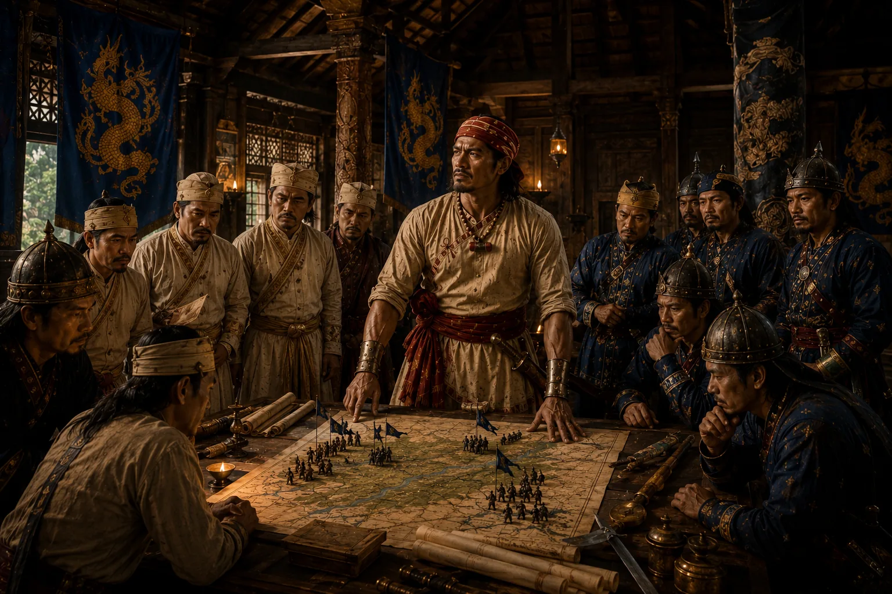

War Council of Udayaditya Singha and Lachit Borphukan
1670 · Against the Mughal Empire

Upon succeeding Chakradhwaj, Udayaditya reaffirms complete faith in Lachit Borphukan, coordinating logistics for the impending Mughal clash.
Sources have not yet been catalogued for this record.
People: Lachit Borphukan, Udayaditya Singha (Sunyatphaa)
Open this scene in the interactive archive · Follow this event on MAP